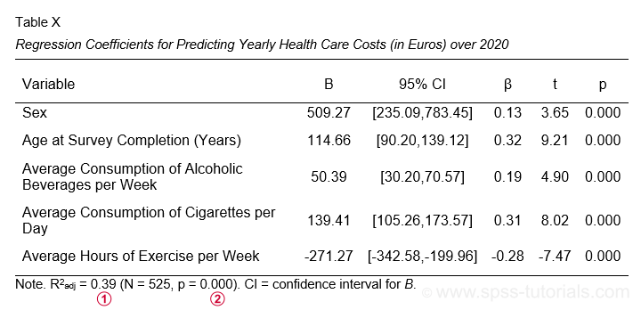

SPSS 多元线性回归示例
作者：Ruben Geert van den Berg，归类于回归分析
- 多元回归 - 示例
- 数据检查和描述性统计
- SPSS 回归对话框
- SPSS 多元回归输出
- 多元回归假设
- APA 报告多元回归
多元回归 - 示例
一位科学家想知道如何以及是否可以根据几个患者特征来预测医疗保健成本。所有数据都在 health-costs.sav 文件中，如下所示。
因变量 (dependent variable) 是 2020 年申报的医疗保健成本（以美元计），简称为“costs”。 自变量 (independent variable) 是性别 (sex)、年龄 (age)、饮酒 (drinking)、吸烟 (smoking) 和运动 (exercise)。
我们的科学家认为，每个自变量与医疗保健成本之间存在线性关系。因此，他决定拟合一个 多元线性回归 (multiple linear regression) 模型。最终模型将同时从所有自变量预测成本。
数据检查和描述性统计
在运行多元回归之前，首先要确保：
- 因变量是定量数据 (quantitative)；
- 每个自变量是定量数据或二分数据 (dichotomous)；
- 您有足够的样本量 (sample size)。
目视检查我们的数据表明满足要求 1 和 2：性别是 二分变量，所有其他相关变量都是定量数据。关于样本量，一个普遍的经验法则是，对于您将包含的每个自变量，您至少要使用 15 个独立的观测值。在我们的例子中，我们将使用 5 个自变量，因此我们需要至少 N = (5 · 15 =) 75 个案例的样本量。我们的数据包含 525 个案例，因此这似乎很好。
请注意，在我们的示例数据中，我们有 N = 525 个独立的观测值。
但是，请记住，如果我们的变量中存在任何 缺失值，我们可能无法使用所有 N = 525 个案例。
现在让我们进行一些快速的数据检查。我强烈建议您至少：
- 对所有变量运行基本直方图 (histogram)。检查它们的频率分布看起来是否合理。是否存在任何异常值 (outliers)？您是否应该指定任何缺失值？
- 检查每个自变量（x 轴）与因变量（y 轴）的 散点图 (scatterplot)。一个方便的工具可以从 SPSS - 创建所有散点图工具 下载。您是否看到任何曲线关系或任何不寻常的东西？
- 对所有变量运行描述性统计 (descriptive statistics)。检查是否有任何变量有任何缺失值，如果有，有多少。
- 检查所有变量之间的 Pearson 相关系数 (Pearson correlations)。绝对相关系数超过 0.8 左右可能会在以后的实际回归分析中引起并发症（称为多重共线性 multicollinearity）。
APA 建议您合并并报告最后两个表格，如下所示。
APA 推荐的表格，用于报告作为多元回归结果一部分的相关性和描述性统计信息
这些数据检查表明，我们的示例数据看起来非常好：所有图表都是合理的，没有缺失值，并且没有一个相关系数超过 0.43。现在让我们继续进行实际的回归分析。
SPSS 回归对话框
我们将首先导航到“A nalyze（分析）”  “R egression（回归）” “L inear（线性）”，如下所示。
“R egression（回归）” “L inear（线性）”，如下所示。

接下来，我们填写主对话框和子对话框，如下所示。

 我们将为我们的 b 系数 (b-coefficients) 选择 95% 置信区间 (confidence intervals)。
我们将为我们的 b 系数 (b-coefficients) 选择 95% 置信区间 (confidence intervals)。  一些分析师将平方半偏相关（或“部分”）相关性报告为个体预测变量的 效应量度 (effect size measures)。但现在，让我们跳过它们。
一些分析师将平方半偏相关（或“部分”）相关性报告为个体预测变量的 效应量度 (effect size measures)。但现在，让我们跳过它们。  通过选择“Exclude cases listwise（按列表排除个案）”，我们的回归分析仅使用在 任何 回归变量上都没有任何缺失值的个案。这对我们的示例数据来说很好，但这可能对其他数据文件来说是一个坏主意。
通过选择“Exclude cases listwise（按列表排除个案）”，我们的回归分析仅使用在 任何 回归变量上都没有任何缺失值的个案。这对我们的示例数据来说很好，但这可能对其他数据文件来说是一个坏主意。  点击“P aste（粘贴）”会导致下面的 语法 (syntax)。让我们运行它。
点击“P aste（粘贴）”会导致下面的 语法 (syntax)。让我们运行它。
SPSS 多元回归语法 I
***Basic multiple regression syntax without regression plots.
**
REGRESSION
/MISSING LISTWISE
/STATISTICS COEFF OUTS CI(95) R ANOVA
/CRITERIA=PIN(.05) POUT(.10)
/NOORIGIN
/DEPENDENT costs
/METHOD=ENTER sex age alco cigs exer.SPSS 多元回归输出
我们检查的第一个表格是下面的 系数表 (Coefficients table)。
 b 系数 (b-coefficients) 决定了我们的回归模型：
b 系数 (b-coefficients) 决定了我们的回归模型：
\[Costs' = -3263.6 + 509.3 \cdot Sex + 114.7 \cdot Age + 50.4 \cdot Alcohol\\\ + 139.4 \cdot Cigarettes - 271.3 \cdot Exericse\]
其中 \(Costs’\) 表示预测的年度医疗保健成本（以美元计）。
每个 b 系数表示与预测变量增加 1 个单位相关的成本的平均增加。例如，年龄增加 1 岁会导致成本平均增加 114.7 美元。或者每周运动增加 1 小时与年度医疗保健成本减少 271.3 美元（即减少 271.3 美元）相关。
现在，让我们谈谈性别：性别增加 1 个单位会导致成本平均增加 509.3 美元。为了理解这意味着什么，请注意，在我们的示例数据中，性别编码为 0（女性）和 1（男性）。因此，对于这个变量，唯一可能的 1 单位增加是从女性 (0) 到男性 (1)。因此，B = 509.3 美元仅仅意味着男性的平均年度成本比女性高 509.3 美元（在其他所有条件相同的情况下）。这有望阐明二分变量如何在多元回归中使用。当我们将在后面的教程中介绍 虚拟变量 (dummy variables) 时，我们将扩展这个想法。
 我们的系数表中的 “Sig.” 列包含每个 b 系数的（双尾）p 值 (p-value)。作为一般准则，如果 b 系数的“Sig.”或 p < 0.05，则该 b 系数具有统计学意义。因此，我们表格中的所有 b 系数都具有高度的 统计学意义 (statistically significant)。确切地说，p 值为 0.000 意味着如果在总体中某个 b 系数为零（零假设），那么找到观察到的样本 b 系数或更极端的一个的概率为 0.000。然后，我们得出结论，总体 b 系数可能根本不为零。
我们的系数表中的 “Sig.” 列包含每个 b 系数的（双尾）p 值 (p-value)。作为一般准则，如果 b 系数的“Sig.”或 p < 0.05，则该 b 系数具有统计学意义。因此，我们表格中的所有 b 系数都具有高度的 统计学意义 (statistically significant)。确切地说，p 值为 0.000 意味着如果在总体中某个 b 系数为零（零假设），那么找到观察到的样本 b 系数或更极端的一个的概率为 0.000。然后，我们得出结论，总体 b 系数可能根本不为零。
现在，我们的 b 系数并没有告诉我们预测变量的相对强度。这是因为它们具有不同的尺度：每天一支香烟比每周一杯酒精饮料更多还是更少？解决这个问题的一种方法是比较 标准化 (standardized) 的回归系数或 beta 系数，通常表示为 β （希腊字母“beta”）。在统计学中，β 也指在假设检验中犯第二类错误的概率。这就是为什么 (1 - β ) 表示 功效 (power)，但这与回归系数完全是不同的主题。
Beta 系数 (Beta coefficients)（标准化回归系数）对于比较预测变量的相对强度很有用。像这样，我们系数表中 3 个最强的预测变量是：
- 年龄 (β = 0.322)；
- 香烟消费量 (β = 0.311)；
- 运动 (β = -0.281)。
Beta 系数是通过在计算 b 系数之前将所有回归变量标准化为 z 分数 (z-scores) 来获得的。标准化变量对它们应用类似的 standard（或 scale 尺度）：生成的 z 分数始终具有 0 的均值和 1 的标准差。 无论它们是根据年份、香烟还是酒精饮料计算的，这都成立。所以这就是为什么根据标准化变量计算的 b 系数 - beta 系数 - 在回归模型内部和之间都是可比较的。
好的，所以我们的 b 系数构成了我们的多元回归模型。这告诉我们如何预测年度医疗保健成本。但是，我们不知道的是，我们的模型预测这些成本的 效果如何 ？我们将在下面讨论的模型摘要表中找到答案。
SPSS 回归输出 II - 模型摘要和方差分析 (ANOVA)
下图显示了 模型摘要和 回归输出中的 ANOVA 表。
R 表示复相关系数 (multiple correlation coefficient)。这仅仅是实际分数与我们的回归模型预测的分数之间的 Pearson 相关性。 R 平方 (R-square) 或 R 2 仅仅是复相关系数的平方。它也是因变量中由整个回归模型解释的方差比例。 在样本数据上计算的 R 平方往往会高估整个总体的 R 平方。因此，我们更喜欢报告 调整后的 R 平方 (adjusted R-square) 或 R 2 adj，它是总体 R 平方的无偏估计量。对于我们的示例，R 2 adj = 0.390。按照大多数标准，这被认为是非常高的。
可悲的是，SPSS 不包括 R 2 adj 的置信区间。但是，在 ANOVA 表中找到的 p 值适用于 R 和 R 平方（此表的其余部分几乎毫无用处）。它评估了我们的整个回归模型具有零总体 R 的零假设。由于 p < 0.05，我们拒绝此示例数据的零假设。
似乎我们已经完成了此分析，但我们跳过了一个重要的步骤：检查多元回归假设。
多元回归假设
我们的数据检查从一些基本要求开始。但是，“官方”的多元线性回归假设是：
- 独立观测 (independent observations)；
- 正态性 (normality)：回归残差 (regression residuals) 必须在总体中呈正态分布。严格来说，我们应该区分残差（样本）和误差（总体）。但是，现在，让我们不要使事情过于复杂；
- 同方差性 (homoscedasticity)：残差的总体方差不应以任何系统的方式波动；
- 线性性 (linearity)：每个预测变量必须与因变量具有线性关系。
我们将通过做 3 件事来检查我们的示例分析是否满足这些假设：
- 对我们的数据进行 目视检查 (visual inspection) 表明，我们的 N = 525 个观测值中的每一个都适用于不同的人。此外，这些人没有以任何会影响他们调查答案的方式进行互动。在这种情况下，我们通常认为它们是独立的观测值。
- 我们将创建并检查回归残差的 直方图 (histogram)，以查看它们是否近似 正态分布 (normally distributed)。
- 我们将创建并检查残差（y 轴）与预测值（x 轴）的 散点图 (scatterplot)。此散点图可以检测违反同方差性和线性性的情况。
获得这两个回归图的简单方法是在对话框中选择它们（如下所示）并重新运行回归分析。
点击“P aste（粘贴）”会导致下面的 语法 (syntax)。我们将运行它并检查下面显示的残差图。
SPSS 多元回归语法 II
***Regression syntax with residual histogram and scatterplot.
**
REGRESSION
/MISSING LISTWISE
/STATISTICS COEFF OUTS CI(95) R ANOVA
/CRITERIA=PIN(.05) POUT(.10)
/NOORIGIN
/DEPENDENT costs
/METHOD=ENTER sex age alco cigs exer
/SCATTERPLOT=(*ZRESID ,*ZPRED)
/RESIDUALS HISTOGRAM(ZRESID).残差图 I - 直方图
我们的标准化残差的直方图显示
- 一点点 正偏度 (positive skewness)；分布的右尾稍微拉伸。
- 一点点正峰度 (positive kurtosis)；我们的分布比正态曲线更峰值（或“尖峰”）。这是因为中间的条太高并穿透了正态曲线。
简而言之，我们确实看到了一些与正态性的偏差，但它们很小。大多数分析师会得出结论，残差 大致 呈正态分布。如果您不相信，您可以通过 SPSS 回归对话框将残差作为新变量添加到数据中。接下来，您可以对它们运行 Shapiro-Wilk 检验 (Shapiro-Wilk test) 或 Kolmogorov-Smirnov 检验 (Kolmogorov-Smirnov test)。但是，我们通常不推荐这些检验。
残差图 II - 散点图
下面显示的残差散点图通常用于检查 a) 同方差性和 b) 线性假设。如果这两个假设都成立，则此散点图不应显示任何系统模式。似乎就是这种情况。
同方差性 (Homoscedasticity) 意味着残差的方差应为常数。这个方差可以从我们的散点图中的点 垂直 分开的距离来估计。因此，当我们从左向右移动时，我们的散点图的高度既不应增加也不应减少。我们没有看到任何这样的模式。
检查 线性性 (Linearity) 假设的常见方法是检查此散点图中的点是否显示任何类型的曲线。这里不是这种情况，因此线性性似乎也成立。但是，就个人而言，我发现这是一种非常弱的方法。一种不寻常（但更强大）的方法是为每个预测变量单独拟合各种非线性回归模型。
这样做几乎不需要任何努力，并且通常会揭示非线性。然后可以将其添加到一些线性模型中，以提高其预测准确性。
可悲的是，这种“唾手可得的果实”通常被忽视，因为分析师通常将自己限制在我们刚才讨论的糟糕的散点图方法。
APA 报告多元回归
APA 报告指南提出了下表，用于报告标准多元回归分析。

我认为 APA 表格不包括我们回归模型的 常数项 (constant) 是非常愚蠢的。我建议您无论如何都要添加它。此外，请注意
调整后的 R 平方在 模型摘要 (model summary) 表中找到，并且 其 p 值是您需要从 SPSS 输出中的 方差分析 (ANOVA) 表中获得的唯一数字。
最后，APA 还建议报告一个组合的描述性统计和相关性表，就像我们在这里看到的那样。
感谢您的阅读！